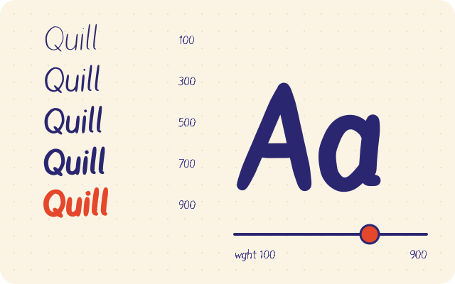
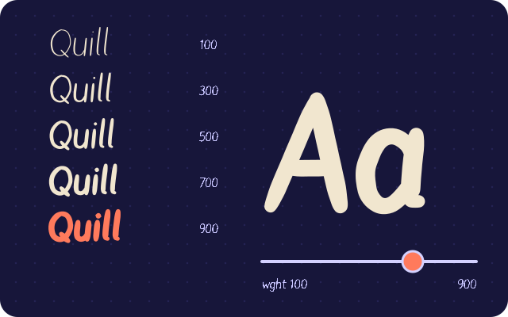
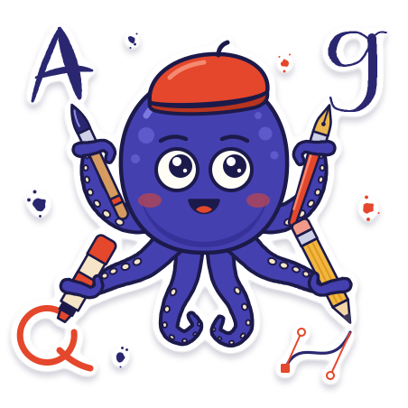
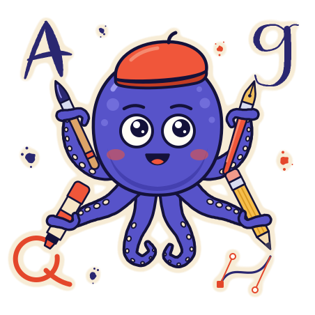

Draw in the browser
Freehand brush strokes that turn into clean outlines, plus a bezier pen tool with corner and smooth points, guides for x-height, cap height and baseline, and live side bearings.
Free font maker in your browser
Write a letter with your mouse, finger or pen and watch it become a real glyph in a real font. Draw, import SVG or scan a handwriting sheet, then export TTF, OTF, WOFF2 and variable fonts. Nothing is uploaded.
Drawing on the letter adds strokes. Every copy of it in the sentence updates.
Ação! The quick brown fox jumps over the lazy dog, 1234567890.
Glyphs: pick one to edit
Three ways in
Freehand brush strokes that turn into clean outlines, plus a bezier pen tool with corner and smooth points, guides for x-height, cap height and baseline, and live side bearings.

Drop SVG files or paths, or trace a PNG or JPG of your lettering into vectors. Open an existing TTF, OTF, WOFF or WOFF2 font and keep editing it.

Print the template, fill it with a pen and take a phone photo. fontsketch finds the markers, flattens the page, evens the light, splits the cells and traces every letter.
How it works
01Scan
The four corner markers tell fontsketch how the page was tilted. It flattens the perspective, corrects the uneven light, splits the grid into cells and traces each letter into vector outlines.
02Weight
Draw a Regular and a Bold master with the same points and fontsketch exports a variable font with a real weight axis. Scroll to move the axis from Thin to Black.
03Hinting
Automatic TrueType hinting finds the stems and snaps them to the pixel grid, so a 12 pixel paragraph renders sharp instead of blurry.
no hintinghinted
04Kerning
Kerning pairs and classes pull awkward combinations like AV, To and Wa together, and every accented copy inherits the pair.
05Export
The compiler writes the font binary in your browser: TrueType outlines, CFF outlines, WOFF and Brotli compressed WOFF2, plus a ready @font-face snippet.
Gallery
Every font below was built with the fontsketch engine, from pen strokes, geometric shapes and SVG icons. Type in any tester, then take the files.
Handwriting · 170 glyphs
Ação! Handwriting that types itself.
Pen strokes drawn on the fontsketch stage, expanded with a soft felt pen, accents built from components.
Variable, wght 100 to 900 · 170 glyphs
From Thin to Black
The same strokes expanded with a thin and a heavy pen: two compatible masters, one variable font file.
Geometric display · 45 glyphs
GEOMETRY WITH A COMPASS
Rings, bars and arcs placed with the fontsketch API, with lowercase mapped to the capitals.
Icon font · 16 glyphs
.at-starU+E000Star.at-heartU+E001Heart.at-checkU+E002Check.at-closeU+E003Close.at-plusU+E004Plus.at-arrow-rightU+E005Arrow right.at-downloadU+E006Download.at-searchU+E007Search.at-homeU+E008Home.at-cameraU+E009Camera.at-sunU+E00ASun.at-moonU+E00BMoon.at-pen-nibU+E00CPen nib.at-brushU+E00DBrush.at-letterU+E00ELetter A.at-bookmarkU+E00FBookmarkSixteen icons mapped to the Private Use Area from U+E000, with a CSS class for each one.
Everything in the box
Pressure aware brush strokes become smooth, editable outlines.
Corner and smooth points, handles, snapping and guides.
Paste or drop SVG paths straight into a glyph.
Trace PNG and JPG lettering into vector contours.
Printable A4 and Letter templates with corner markers.
Perspective, lighting and cell detection, all on device.
Pairs and classes, with live preview strings.
Automatic TrueType hinting, manual stems, or none.
Weight axis from compatible masters, one file.
TTF, OTF, WOFF and WOFF2 plus @font-face CSS.
A CLI that turns a folder of SVG icons into a font.
Projects save in your browser and as .fontsketch.json.
For developers
The same engine runs in Node 18+ and in the browser, with zero runtime dependencies for TTF and OTF. Build fonts in CI, generate icon fonts, or parse existing fonts.
# a folder of SVG icons becomes WOFF2, WOFF, TTF, CSS classes and a preview page
npx fontsketch from-svg ./icons --family Icons -o ./dist
# compile a project saved from the editor
npx fontsketch build my-hand.fontsketch.json -o ./fonts --formats woff2,ttfimport { writeFileSync } from 'node:fs';
import { createFont, addGlyph, circleContour, reverseContour, exportFont, cssFontFace } from 'fontsketch';
const font = createFont({ family: 'My Hand', designer: 'Me' });
addGlyph(font, {
name: 'o',
advanceWidth: 520,
contours: [circleContour(260, 250, 230), reverseContour(circleContour(260, 250, 130))],
});
writeFileSync('my-hand.woff2', exportFont(font, { format: 'woff2', hinting: 'auto' }));
console.log(cssFontFace(font, '/fonts/my-hand.woff2'));Guides
turn your handwriting into a fontHow to turn your handwriting into a font (free, in your browser)create a font online freeHow to create a font online for freemake a font from SVGHow to make a font from SVG files how to make a fontHow to make a font, from first letter to finished file
how to make a fontHow to make a font, from first letter to finished file

variable font tutorialVariable font tutorial, from two masters to one flexible fileFAQ
Print the fontsketch handwriting sheet, fill each cell with a dark pen, take a phone photo and drop it into the editor. It flattens the page, traces every letter and lets you export a TTF, OTF or WOFF2 font. Everything is free and runs in your browser.
Yes. fontsketch is a font editor in the browser. Open the editor, draw or import your glyphs and download the font file. There is no account and no install, and your files never leave your device.
Yes. Import SVG paths into any glyph in the editor, or run npx fontsketch icons with a folder of SVG icons to generate an icon font with CSS classes.
TTF (TrueType outlines), OTF (CFF outlines), WOFF and WOFF2 for the web, plus a ready @font-face CSS snippet. Variable fonts with a weight axis are exported from compatible masters.
Yes. Draw the base letters and the marks once, and fontsketch builds accented letters from components, covering Latin-1 Supplement and Latin Extended-A, so Portuguese, Spanish, French, German and Polish text just works.
You do. fontsketch is MIT licensed open source and adds no license or watermark to your fonts. Choose any license you like for the fonts you create.


Open the editor with Quill Hand as a template, or start from a blank page.